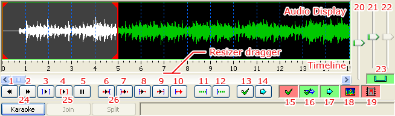

Audio
From Aegisub Manual
Aegisub has a fairly advanced, customizable audio mode with both the traditional waveform display as well as an alternative spectrum display. Several different timing modes are available for both normal dialog timing and karaoke timing.
Contents |
Opening audio
To load an audio file into Aegisub, just go to the Audio menu and press Open audio file. If you have a video file (with an included audio track) already loaded, you can use Open audio from video instead, which obviously will load the audio track from the video file you currently have loaded. You can open any type of audio file that your audio provider can decode, more on this below.
Supported formats: Windows
Under Microsoft Windows, your audio provider is Avisynth by default, which means that any audio format that your DirectShow environment knows how to decode is supported (at least in theory). For example, if you want to load an AC3 file, you will need an AC3 DirectShow decoder (e.g. AC3filter or ffdshow). Note: some formats seem pretty buggy at the moment. Ones more or less guaranteed to work are (16-bit) PCM-WAV, MP3 and Vorbis, so if your audio doesn't work, try transcoding to one of them, at least temporarily.
Warning: If you have opened a video file with more than one audio track (most commonly an MKV or OGM file), and try to open audio from it, Aegisub is completely at the mercy of the splitter when it comes to what audio stream is delivered. Some splitters may deliver both audio streams at once (this will happen for dual audio AVI's, when using the default Windows splitter), and since Aegisub very much doesn't expect that, you will get weird results (and probably crashes). Just remux the file to single audio, or better yet, decompress the desired audio stream to WAV.
Supported formats: non-Windows
On all other operating systems (MacOS X, GNU/Linux, the BSD variants etc.) your audio provider is ffmpeg, which means you can use any audio format that ffmpeg supports (and was compiled with).
Audio caching
If you're loading any audio format that isn't an uncompressed (PCM) Microsoft WAV file, Aegisub needs to decode and cache it first. When loaded, the audio is downmixed to mono (see the audio downmixer option if you want to grab one channel only instead), decompressed to PCM (a.k.a. WAV), and (by default) loaded into a RAM cache. This means that you will need a large amount of RAM to open a long compressed audio file. If your computer doesn't have a lot of RAM, or if you're working with a full-length movie, refer to the audio cache option for instructions on how to make Aegisub use its (slower) hard drive cache instead; or decompress the file to WAV first since Aegisub can read from WAV's directly without need for caching.
The exact amount of memory used for any given audio file can be calculated with the following formula:
s = ( b * r * l ) / 8
where s is the amount of memory (in bytes - divide by 1024 to get kB), b is the number of bits per sample (always 16 in the current implementation), r is the sample rate in Hz (usually 48000, or 44100 in some cases), and l is the length of the audio (in seconds).
For example, for a 25 minute audio clip at 48 kHz, you will need (16 * 48000 * 25 * 60)/8 = 144000000 bytes ~= 137 MB.
Loading and decompressing the audio into the cache will take a few seconds; Aegisub will display a progress indicator while loading the audio.
The main audio view
When your audio file has loaded, Aegisub will transform into something like the screenshot below: 
You can click and drag just below the audio timeline to change the height of the audio waveform/spectrum display.
Green and red buttons are toggle buttons. A green background indicates that the option is turned on, while a red background indicates that the option is turned off. The buttons and controls are as follows (many of these have keyboard shortcuts associated with them by default):
- Go to previous line, discarding any unsaved changes (previous syllable when in karaoke mode)
- Go to next line, discarding any unsaved changes (next syllable when in karaoke mode)
- Play selected area of the audio waveform
- Play currently selected line
- Pause playback
- Play 500ms before selection start
- Play 500ms after selection end
- Play first 500ms of selection
- Play last 500ms of selection
- Play from selection start to end of file (or until pause is pressed)
- Add lead-in (how much is determined by the audio lead in setting)
- Add lead-out (exactly like the above, but the setting is called audio lead out, logically enough)
- Commit (save) changes
- Scroll view to selection/go to selection
- Toggle auto-commit (all timing changes will be committed immediately, without the user pressing commit, if this is enabled)
- Toggle auto next line on commit (if this is enabled, Aegisub will automatically select the next line when the current line is committed; enabling both this and auto-commit at the same time is strongly discouraged)
- Toggle auto-scrolling (will center waveform on the currently selected line automatically when enabled)
- Toggle spectrum analyzer mode (see below)
- Toggle Medusa-style timing shortcuts
- Audio display zoom (horizontal)
- Audio display zoom (vertical)
- Audio volume
- Toggle linking of vertical audio zoom slider with volume slider
- Toggle karaoke mode
- Join selected syllables (karaoke mode only)
- Split selected syllables (karaoke mode only)
Basic audio timing
When you click on a line in the subtitles grid, Aegisub will highlight it in the audio display and, if you have auto-scrolling enabled, scroll the audio display so it's centered on the line (during normal timing, it's probably a good idea to disable auto-scrolling). You'll notice various vertical lines in the audio display; the dark blue ones indicate second boundaries, the pink ones indicate keyframes in the video if you have it loaded (see the Working with video section), the white broken line indicates the currently visible video frame, and the thick red and orange ones are the line start and end markers (respectively) for the current line. To (re-)define the start and end times of the line, you can either left-click to set the start time and right-click to set the end time, or just drag-and-drop the line boundaries. The selection background will turn red and display the word "Modified" in the top left corner of the audio display when you've changed the timing but haven't saved the changes yet. It will remain red until you either press the commit button (enter or g by default) or go to another line (discards changes). If you have auto-commit on, the background will never turn red since all changes will be saved immediately. Press the play button (keyboard shortcut s by default) to listen to the selection, or the various other playing buttons to listen to parts of the selection or the audio surrounding it. When you are satisfied with the timing, press commit. Then repeat once for every line; it's as simple as that.
Timing protips
If you want to finish timing your movie or episode within any reasonable amount of time, there's some things you should note:
- Use keyboard shortcuts! They speed up your work by several orders of magnitude.
- You don't need to have video displayed while timing. Scene-timing, i.e. syncing line start/ends to scene changes, can be done later. Either manually, or with the timing postprocessor.
- Use "go to next line on commit".
- Experiment with different timing styles when you're new and stick to one that suits you. Then practice. Lots.
- Aegisub heavily relies on the concept of "focus", and doing things in a way that require you to switch back and forth between video/audio/subtitle edit box a lot will cost you a lot of time. Do it in several "passes" instead.
- The spectrum analyzer mode can make it a lot easier to "see" where lines start and end.
One common timing style (preferred by the author of this page) goes something like the following: Turn on "go to next line on commit" but disable auto-commiting, auto-scrolling and Medusa timing shortcuts. Keep the four main fingers of your left hand on s/d/f/g. You won't be using the thumb so do whatever you want with it. Keep your right hand on the mouse. Now select (by left- and right-clicking) an area in the waveform that seems likely to contain a line of speech matching the current subtitle line, and hit s to play it back. While it's playing, adjust the start time if necessary. When the playback marker has passed the end time mark, adjust the end time as well. If greater accuracy is needed, play the last 250ms of the selection by pressing d, 250ms before the selection start by pressing q, 250ms after the selection end by pressing w, or the first 250ms of the selection by pressing e. As you grow more experienced, you won't be using anything else than s very much, except maybe d and q. When you're satisfied with the timing, hit g to commit changes and go on to the next line. Scroll the audio display forward by pressing f. If you need to scroll it backwards, use a. To go to next or previous line without committing changes, use z and x.
This style has the advantage that you never need to move your hands at all. With some training, it can also be very fast; audio timing 350-400 lines of dialog to a 25-minute episode can easily be done in less than 40 minutes.
Of course, this style may not feel comfortable for all people; you should experiment with other timing styles before deciding which one is best for you.
The spectrum analyzer mode
When you press the spectrum analyzer button, the waveform does no longer show amplitude (signal strength) on the vertical axis - instead it shows frequency. The higher up, the higher the frequency. The colors instead indicate amplitude, with black/dark blue being silence and white being the strongest sound. This may seem confusing, but since the frequency window is set to fit human voices rather well, it can make it easy to tell where a line (or a word in karaoke mode) starts and ends when there's a lot of background noise (or music) that makes it hard to tell from the normal waveform. It can be especially useful when timing karaoke. Play around with it for a little while, and you'll understand how it works.
Note that in spectrum analyzer mode, the "vertical zoom" slider is redefined to control color intensity instead, since the colors indicate signal strength.
Because calculating the spectrum data is very CPU intensive, it in initially set to be in a medium quality. You can increase the quality of the spectrum in the audio options.